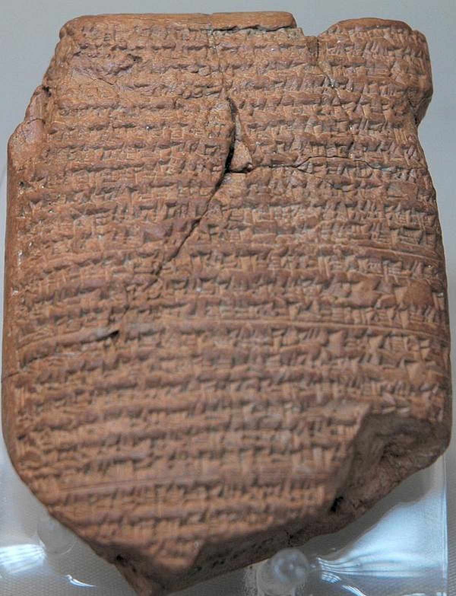
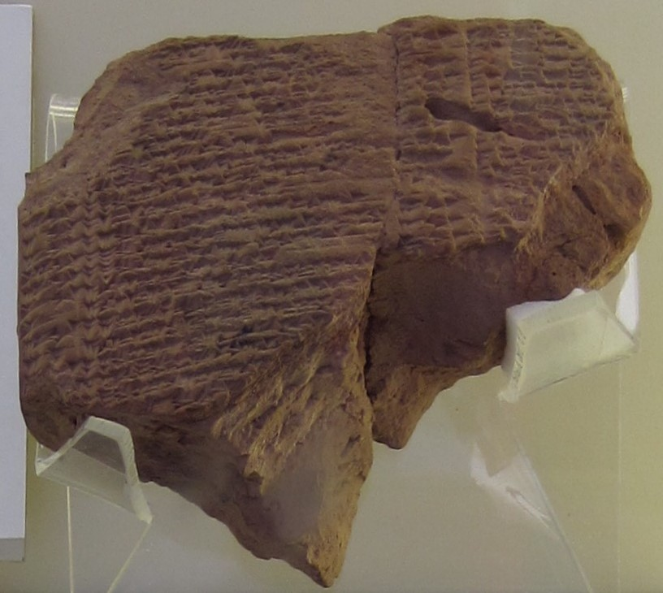

1. Cronologia: da ameaça à destruição
2 Reis 25 situa-se no fim do reino de Judá. A primeira deportação babilônica ocorreu em 597 a.C., quando Joaquim (também chamado Jeconias ou Jeconias) foi levado à Babilônia e Zedequias tornou-se rei. Após uma revolta, Nabucodonosor II sitiou Jerusalém. A cidade caiu em 587 ou 586 a.C., conforme diferentes convenções cronológicas; o templo e edifícios importantes foram queimados, parte da população foi deportada e a monarquia perdeu sua base.
- 597 a.C.: primeira tomada babilônica, deposição de Joaquim e deportação de parte da elite.
- 587/586 a.C.: após novo cerco, Jerusalém é tomada e destruída; Zedequias é capturado.
- Após a queda: Gedalias é nomeado governador de uma população remanescente; sua morte provoca fuga para o Egito.
- 561 a.C.: Evil-Merodaque (Amel-Marduque) liberta Joaquim da prisão e lhe concede posição na corte.

A tabuinha é importante justamente por seu limite: registra a primeira captura de Jerusalém, não o cerco final descrito em 2 Reis 25. Não sobreviveu uma crônica babilônica conhecida que narre a queda final com o mesmo detalhe. A Bíblia, Jeremias e outras evidências são examinados em conjunto, sem fingir que uma única fonte responde a tudo.
2. 2 Reis 25 por blocos
Versículos 1–7 — O cerco, a fome e a captura de Zedequias
O capítulo começa com datas e posições militares: tropas babilônicas cercam Jerusalém; o cerco dura até a fome tornar a resistência insustentável. Zedequias foge, mas é capturado perto de Jericó. Seus filhos são mortos diante dele, seus olhos são vazados e ele é levado acorrentado à Babilônia.
O relato é contido e brutal. Não descreve apenas a perda de território; mostra a violência dirigida à família real e a retirada da capacidade de governar. Para quem ouve o texto, o corpo do rei se torna imagem da derrota política.
Versículos 8–12 — O templo e a cidade são queimados
No sétimo dia do quinto mês do décimo nono ano de Nabucodonosor, Nebuzaradã chega a Jerusalém. Queima o templo, o palácio e as casas; derruba as muralhas e deporta parte da população. Os mais pobres permanecem para trabalhar a terra.
O templo não era apenas um edifício. Era centro de culto, memória, calendário, identidade e esperança política. Sua destruição provocou uma pergunta religiosa profunda: como compreender a relação com Deus quando o lugar que simbolizava essa relação foi arrasado? O livro de Reis responde com sua teologia da aliança; outros textos bíblicos, como Lamentações, dão voz ao luto.

Versículos 13–17 — Objetos sagrados removidos
Bronze, utensílios e colunas do templo são quebrados ou levados. O inventário é detalhado. O registro material dá forma à perda: objetos ligados ao culto e à memória do reino passam a fazer parte do espólio imperial. A lista comunica que não houve apenas uma mudança de governo; instituições e práticas foram interrompidas.
O texto não descreve a perspectiva dos soldados ou dos deportados em termos psicológicos modernos. Podemos, com prudência, reconhecer que a remoção de objetos centrais para a vida comunitária aprofunda a ruptura de pertencimento.
Versículos 18–21 — Lideranças executadas e população deportada
O chefe da guarda captura sacerdotes, oficiais e conselheiros; eles são levados ao rei da Babilônia e executados em Ribla. Judá é deportada. A linguagem coletiva registra a dissolução de uma estrutura política e a dispersão de pessoas.
“Exílio” não foi necessariamente uma experiência idêntica para todos. Houve diferentes ondas, destinos e condições de vida; parte da população permaneceu na terra, enquanto outras famílias foram deslocadas. Evitemos imaginar que todo indivíduo perdeu tudo do mesmo modo ou que a comunidade deixou de existir.
Versículos 22–26 — Gedalias, esperança administrativa e nova violência
Nabucodonosor nomeia Gedalias como governador dos que ficaram. Ele aconselha a população a servir aos caldeus e viver em segurança. Ismael, de linhagem real, assassina Gedalias; o povo então foge para o Egito por medo de represálias.
Este trecho impede um final simples. Uma tentativa de reorganização surge, mas é quebrada por assassinato e temor. O capítulo mostra que, após a queda, não basta dizer “recomece”: condições de segurança, confiança e liderança também importam.
Versículos 27–30 — Joaquim é libertado: um final pequeno, mas aberto
No trigésimo sétimo ano do exílio de Joaquim, Evil-Merodaque o tira da prisão, fala com bondade, dá-lhe lugar de honra e sustenta sua vida. Depois de uma longa sequência de incêndios, deportações e mortes, o livro termina sem restaurar o reino ou reconstruir o templo. O gesto é modesto: um rei deposto recebe dignidade e alimento.

O encerramento permite mais de uma leitura. Pode preservar uma esperança dinástica para leitores posteriores; pode também simplesmente registrar que Joaquim recebeu tratamento menos degradante. Não afirma que a catástrofe foi desfeita. A abertura é real, mas limitada.
3. História, memória e debate
O capítulo conserva referências a pessoas, lugares, datas de reinado e procedimentos administrativos. A Crônica Babilônica BM 21946 confirma a campanha de 597 a.C. e a submissão de Jerusalém, ajudando a situar a deportação de Joaquim. A tabuinha de rações é evidência independente de que Joaquim viveu na Babilônia sob administração régia.
Para a tomada final de Jerusalém, a cronologia é discutida entre 587 e 586 a.C., conforme o sistema de contagem de anos e a leitura das fontes. A Bíblia apresenta uma explicação teológica da queda vinculada à infidelidade dos governantes e ao percurso de Judá. Historiadores também analisam estratégia imperial, rebeliões, cercos e políticas de deportação. Explicações históricas não comprovam nem refutam por si mesmas a interpretação religiosa.
O livro de Reis parece ter sido organizado e editado a partir de tradições anteriores, com perspectiva teológica deuteronomista. Exílio e perda moldam o modo como a história é contada; porém, estudiosos discutem a data e as etapas dessa composição. É melhor falar em camadas prováveis do que afirmar um processo editorial totalmente certo.

4. Luto, trauma e identidade: uma leitura cuidadosa
Não temos acesso às experiências interiores de cada exilado e seria anacrônico diagnosticar uma população antiga. Ainda assim, deslocamento forçado, violência, luto e ruptura de laços podem ser reconhecidos como experiências severas. O capítulo registra vários níveis de perda: governantes, famílias, cidade, culto, autonomia e continuidade cotidiana.
A psicologia contemporânea pode oferecer perguntas, não um diagnóstico retrospectivo: o que ajuda uma pessoa a conservar vínculos quando o lugar muda? Como a memória coletiva dá nome ao que foi perdido? Que condições permitem que a esperança volte sem exigir que o luto desapareça?
A Bíblia preserva mais de uma voz. 2 Reis organiza a queda numa explicação teológica; Lamentações expressa dor e protesto; Isaías 40–55 fala a uma comunidade exilada com promessa de presença, auxílio e futuro. Isaías 41:10, portanto, não deve apagar 2 Reis 25: é uma palavra dirigida a um povo que conheceu destruição, e não uma afirmação de que o sofrimento não ocorreu.
5. Diálogo filosófico: dignidade depois da perda
Aristóteles: a vida humana depende também de comunidade
Na ética e na política de Aristóteles, amizade cívica, hábitos e participação na comunidade são dimensões relevantes da vida boa. O exílio mostra o quanto estruturas coletivas sustentam identidade e prática. A comparação moderna não reduz a fé israelita à filosofia grega; ajuda a perceber que perder instituições e relações é uma perda humana concreta.
Epicteto: limites do controle sem indiferença
A distinção estoica entre aquilo que depende de nós e aquilo que não depende pode ajudar alguém a pensar em escolhas diante de uma perda irreversível. Mas não deve ser usada para culpar quem sofre ou para recomendar passividade diante da injustiça. Os deportados de 2 Reis não escolheram a violência que os deslocou.
Viktor Frankl: sentido não é justificativa para a violência
Frankl refletiu sobre a busca de sentido em circunstâncias extremas. Esse diálogo exige cuidado: encontrar significado depois de sofrer não torna o sofrimento necessário, justo ou desejável. A esperança do final de Reis não absolve o império nem exige que a vítima transforme sua dor em lição edificante.
6. Paralelo com o presente
Hoje também há pessoas que perdem casa, comunidade, trabalho, saúde ou relações importantes. A comparação válida não está em dizer que tudo é igual ao exílio da Antiguidade; está em reconhecer perguntas recorrentes sobre pertencimento, dignidade e continuidade. Refugiados modernos, por exemplo, vivem realidades políticas e jurídicas próprias que não devem ser confundidas com os deportados da Babilônia.
O capítulo desafia duas simplificações: “se houve perda, acabou toda esperança” e “se apareceu uma pequena abertura, a perda já foi resolvida”. O fim com Joaquim não restaura Jerusalém, mas impede que a narrativa termine apenas com a sentença de destruição. Algumas retomadas começam com dignidade, alimento, segurança e um vínculo preservado.
Em situações atuais de luto ou trauma, apoio humano e profissional pode ser importante. A fé pode acompanhar esse caminho para quem crê, mas não substitui tratamento, proteção ou ajuda prática.
7. Cinco princípios para praticar
- Dê nome às perdas sem apressar o consolo. Liste o que mudou e o que permanece; risco: transformar o exercício em ruminação sem apoio.
- Proteja o que preserva dignidade. Rotina básica, vínculos e cuidado podem ser pequenos começos; risco: tratar pequenos gestos como solução completa.
- Reconheça que nem tudo é escolha individual. Circunstâncias e estruturas têm peso; risco: concluir que nenhuma ação é possível.
- Procure comunidades confiáveis. Pertencimento se reconstrói com relações seguras; risco: confiar em quem pressiona ou explora vulnerabilidade.
- Admita esperança em escala realista. Uma abertura não apaga a história, mas pode iniciar outro capítulo; risco: exigir gratidão antes de estar pronto.
8. Três perguntas difíceis e uma síntese
- Que perda ainda tento negar porque temo que reconhecê-la signifique desistir?
- Qual pequeno gesto de dignidade ou vínculo é possível agora, mesmo sem resolver tudo?
- Minha esperança permite o luto e a busca de ajuda, ou me cobra que eu pareça bem?
Síntese: 2 Reis 25 não termina com a restauração plena; termina com uma vida preservada dentro do exílio. A esperança que emerge é modesta e não cancela a violência. O capítulo ajuda a pensar que continuidade pode começar por dignidade e cuidado, sem negar a perda nem atribuí-la à falta de fé.